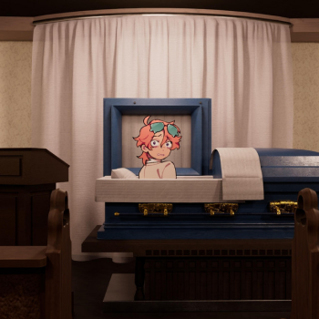
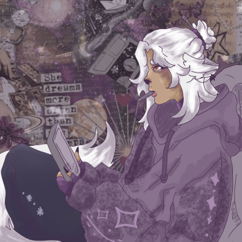
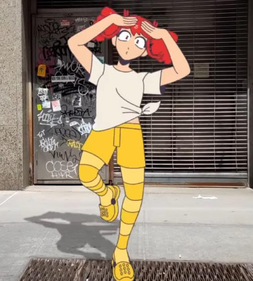
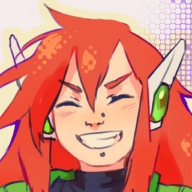

Remi Lamb
Vector Over Photography
Zine and Photocopy
Vector Over Photography
Vectors are digital images oftentimes mainly art and can be used over
photography to add depth into the scenes that we see within art.

They Will Bury Me A Woman album art / RainyHolmes
A recently released song featuring digital art over real world photography!
Yuuki Mikami / Remi Lamb
This is my own art! Through the use of edited photos I found on Pintrest,
and drawing ontop of the collaged photos in Procreate!

Untitled / Violetta Lamb
Art made by my sister Violetta Lamb! Similar to my Yuuki Mikami piece,
Violetta would use collaged images and drawn ontop.


BIRDBRAIN